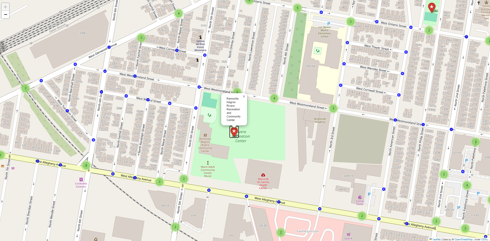

[-75.2802977, 39.867005, -74.9558314, 40.1379593]2. Road Network/Walkability Analysis
A shorter walking distance to health centers ensures that community members have easier access to healthcare services. In emergency situations, such as accidents or sudden illnesses, quick access to a health center can be a matter of life and death. Shorter walk distances can improve emergency response times. When health centers are within walking distance, individuals are more likely to schedule and attend regular check-ups and screenings, contributing to preventive care and early detection of health issues. Therefore, we can conduct the walkability analysis for health centers in Philadelphia. Here, I used 2km as the walking distance. I used the OSM network data and the corresponding API to do this osmnx analysis. The returning processed graph is shown with 199,029 nodes. I plotted the walking distance to the nearest health center for each point in the network. Please note that, due to quarto render memory restriction, I’m not able to upload some of the generated visulaizations to the website. Therefore, I’m inserting screenshots below to show the results that I ran in the Jupyter notebook.
Please make sure to open the interactive html files called interactive_healcenter_distance.html and interactive_park_distance from the main folder to navigate the walkability analysis. I’m keeping the code for the visulizations below for demostration purpose. The complete code (larger file) is also available in the file called final project.ipynb.
Requesting network data within bounding box from Overpass API in 1 request(s)
Posting to http://www.overpass-api.de/api/interpreter with timeout=180, "{'data': '[out:json][timeout:180];(way["highway"]["highway"!~"motor|proposed|construction|abandoned|platform|raceway"]["foot"!~"no"]["pedestrians"!~"no"](39.86700500,-75.28029770,40.13795930,-74.95583140);>;);out;'}"
Downloaded 90,035.2KB from www.overpass-api.de in 3.56 seconds
Downloaded OSM network data within bounding box from Overpass API in 1 request(s) and 5.51 seconds
Returning OSM data with 577,585 nodes and 135,110 ways...
Edge node pairs completed. Took 111.99 seconds
Returning processed graph with 199,029 nodes and 291,436 edges...
Completed OSM data download and Pandana node and edge table creation in 125.12 seconds| 1 | 2 | 3 | 4 | 5 | 6 | 7 | 8 | 9 | 10 | |
|---|---|---|---|---|---|---|---|---|---|---|
| id | ||||||||||
| 11434816809 | 217.279007 | 1427.699951 | 1693.581055 | 1712.387939 | 2000.0 | 2000.0 | 2000.0 | 2000.0 | 2000.0 | 2000.0 |
| 11434816810 | 220.731995 | 1424.246948 | 1690.128052 | 1715.840942 | 2000.0 | 2000.0 | 2000.0 | 2000.0 | 2000.0 | 2000.0 |
| 11434816811 | 437.075012 | 1246.297974 | 1748.411011 | 1837.038940 | 2000.0 | 2000.0 | 2000.0 | 2000.0 | 2000.0 | 2000.0 |
| 11435381643 | 2000.000000 | 2000.000000 | 2000.000000 | 2000.000000 | 2000.0 | 2000.0 | 2000.0 | 2000.0 | 2000.0 | 2000.0 |
| 11435381645 | 2000.000000 | 2000.000000 | 2000.000000 | 2000.000000 | 2000.0 | 2000.0 | 2000.0 | 2000.0 | 2000.0 | 2000.0 |
| 11435381646 | 2000.000000 | 2000.000000 | 2000.000000 | 2000.000000 | 2000.0 | 2000.0 | 2000.0 | 2000.0 | 2000.0 | 2000.0 |
| 11435381648 | 2000.000000 | 2000.000000 | 2000.000000 | 2000.000000 | 2000.0 | 2000.0 | 2000.0 | 2000.0 | 2000.0 | 2000.0 |
| 11435381650 | 2000.000000 | 2000.000000 | 2000.000000 | 2000.000000 | 2000.0 | 2000.0 | 2000.0 | 2000.0 | 2000.0 | 2000.0 |
| 11435381651 | 2000.000000 | 2000.000000 | 2000.000000 | 2000.000000 | 2000.0 | 2000.0 | 2000.0 | 2000.0 | 2000.0 | 2000.0 |
| 11435381653 | 2000.000000 | 2000.000000 | 2000.000000 | 2000.000000 | 2000.0 | 2000.0 | 2000.0 | 2000.0 | 2000.0 | 2000.0 |
| 11435381655 | 2000.000000 | 2000.000000 | 2000.000000 | 2000.000000 | 2000.0 | 2000.0 | 2000.0 | 2000.0 | 2000.0 | 2000.0 |
| 11435381656 | 2000.000000 | 2000.000000 | 2000.000000 | 2000.000000 | 2000.0 | 2000.0 | 2000.0 | 2000.0 | 2000.0 | 2000.0 |
| 11435381658 | 2000.000000 | 2000.000000 | 2000.000000 | 2000.000000 | 2000.0 | 2000.0 | 2000.0 | 2000.0 | 2000.0 | 2000.0 |
| 11435381659 | 2000.000000 | 2000.000000 | 2000.000000 | 2000.000000 | 2000.0 | 2000.0 | 2000.0 | 2000.0 | 2000.0 | 2000.0 |
| 11435381660 | 2000.000000 | 2000.000000 | 2000.000000 | 2000.000000 | 2000.0 | 2000.0 | 2000.0 | 2000.0 | 2000.0 | 2000.0 |
| 11435381661 | 2000.000000 | 2000.000000 | 2000.000000 | 2000.000000 | 2000.0 | 2000.0 | 2000.0 | 2000.0 | 2000.0 | 2000.0 |
| 11435381662 | 2000.000000 | 2000.000000 | 2000.000000 | 2000.000000 | 2000.0 | 2000.0 | 2000.0 | 2000.0 | 2000.0 | 2000.0 |
| 11435381663 | 2000.000000 | 2000.000000 | 2000.000000 | 2000.000000 | 2000.0 | 2000.0 | 2000.0 | 2000.0 | 2000.0 | 2000.0 |
| 11435381664 | 2000.000000 | 2000.000000 | 2000.000000 | 2000.000000 | 2000.0 | 2000.0 | 2000.0 | 2000.0 | 2000.0 | 2000.0 |
| 11435444669 | 2000.000000 | 2000.000000 | 2000.000000 | 2000.000000 | 2000.0 | 2000.0 | 2000.0 | 2000.0 | 2000.0 | 2000.0 |
| 11435444671 | 2000.000000 | 2000.000000 | 2000.000000 | 2000.000000 | 2000.0 | 2000.0 | 2000.0 | 2000.0 | 2000.0 | 2000.0 |
| 11435444673 | 2000.000000 | 2000.000000 | 2000.000000 | 2000.000000 | 2000.0 | 2000.0 | 2000.0 | 2000.0 | 2000.0 | 2000.0 |
| 11435444674 | 2000.000000 | 2000.000000 | 2000.000000 | 2000.000000 | 2000.0 | 2000.0 | 2000.0 | 2000.0 | 2000.0 | 2000.0 |
| 11435444675 | 2000.000000 | 2000.000000 | 2000.000000 | 2000.000000 | 2000.0 | 2000.0 | 2000.0 | 2000.0 | 2000.0 | 2000.0 |
| 11435444676 | 2000.000000 | 2000.000000 | 2000.000000 | 2000.000000 | 2000.0 | 2000.0 | 2000.0 | 2000.0 | 2000.0 | 2000.0 |
| 11435444677 | 2000.000000 | 2000.000000 | 2000.000000 | 2000.000000 | 2000.0 | 2000.0 | 2000.0 | 2000.0 | 2000.0 | 2000.0 |
| 11435444678 | 2000.000000 | 2000.000000 | 2000.000000 | 2000.000000 | 2000.0 | 2000.0 | 2000.0 | 2000.0 | 2000.0 | 2000.0 |
| 11435444679 | 2000.000000 | 2000.000000 | 2000.000000 | 2000.000000 | 2000.0 | 2000.0 | 2000.0 | 2000.0 | 2000.0 | 2000.0 |
| 11435444710 | 2000.000000 | 2000.000000 | 2000.000000 | 2000.000000 | 2000.0 | 2000.0 | 2000.0 | 2000.0 | 2000.0 | 2000.0 |
| 11435444711 | 2000.000000 | 2000.000000 | 2000.000000 | 2000.000000 | 2000.0 | 2000.0 | 2000.0 | 2000.0 | 2000.0 | 2000.0 |
| 11435444712 | 2000.000000 | 2000.000000 | 2000.000000 | 2000.000000 | 2000.0 | 2000.0 | 2000.0 | 2000.0 | 2000.0 | 2000.0 |
| 11435444713 | 2000.000000 | 2000.000000 | 2000.000000 | 2000.000000 | 2000.0 | 2000.0 | 2000.0 | 2000.0 | 2000.0 | 2000.0 |
| 11435444715 | 2000.000000 | 2000.000000 | 2000.000000 | 2000.000000 | 2000.0 | 2000.0 | 2000.0 | 2000.0 | 2000.0 | 2000.0 |
| 11435444716 | 2000.000000 | 2000.000000 | 2000.000000 | 2000.000000 | 2000.0 | 2000.0 | 2000.0 | 2000.0 | 2000.0 | 2000.0 |
| 11435444717 | 2000.000000 | 2000.000000 | 2000.000000 | 2000.000000 | 2000.0 | 2000.0 | 2000.0 | 2000.0 | 2000.0 | 2000.0 |
| 11435444718 | 2000.000000 | 2000.000000 | 2000.000000 | 2000.000000 | 2000.0 | 2000.0 | 2000.0 | 2000.0 | 2000.0 | 2000.0 |
| 11435444720 | 2000.000000 | 2000.000000 | 2000.000000 | 2000.000000 | 2000.0 | 2000.0 | 2000.0 | 2000.0 | 2000.0 | 2000.0 |
| 11435444721 | 2000.000000 | 2000.000000 | 2000.000000 | 2000.000000 | 2000.0 | 2000.0 | 2000.0 | 2000.0 | 2000.0 | 2000.0 |
| 11435444722 | 2000.000000 | 2000.000000 | 2000.000000 | 2000.000000 | 2000.0 | 2000.0 | 2000.0 | 2000.0 | 2000.0 | 2000.0 |
| 11435444723 | 2000.000000 | 2000.000000 | 2000.000000 | 2000.000000 | 2000.0 | 2000.0 | 2000.0 | 2000.0 | 2000.0 | 2000.0 |
| 11435444725 | 2000.000000 | 2000.000000 | 2000.000000 | 2000.000000 | 2000.0 | 2000.0 | 2000.0 | 2000.0 | 2000.0 | 2000.0 |
| 11435444727 | 2000.000000 | 2000.000000 | 2000.000000 | 2000.000000 | 2000.0 | 2000.0 | 2000.0 | 2000.0 | 2000.0 | 2000.0 |
| 11436705889 | 2000.000000 | 2000.000000 | 2000.000000 | 2000.000000 | 2000.0 | 2000.0 | 2000.0 | 2000.0 | 2000.0 | 2000.0 |
| 11436705891 | 2000.000000 | 2000.000000 | 2000.000000 | 2000.000000 | 2000.0 | 2000.0 | 2000.0 | 2000.0 | 2000.0 | 2000.0 |
| 11436705892 | 2000.000000 | 2000.000000 | 2000.000000 | 2000.000000 | 2000.0 | 2000.0 | 2000.0 | 2000.0 | 2000.0 | 2000.0 |
| 11436705896 | 2000.000000 | 2000.000000 | 2000.000000 | 2000.000000 | 2000.0 | 2000.0 | 2000.0 | 2000.0 | 2000.0 | 2000.0 |
| 11438881341 | 2000.000000 | 2000.000000 | 2000.000000 | 2000.000000 | 2000.0 | 2000.0 | 2000.0 | 2000.0 | 2000.0 | 2000.0 |
| 11438881344 | 2000.000000 | 2000.000000 | 2000.000000 | 2000.000000 | 2000.0 | 2000.0 | 2000.0 | 2000.0 | 2000.0 | 2000.0 |
| 11438881346 | 2000.000000 | 2000.000000 | 2000.000000 | 2000.000000 | 2000.0 | 2000.0 | 2000.0 | 2000.0 | 2000.0 | 2000.0 |
| 11438881352 | 2000.000000 | 2000.000000 | 2000.000000 | 2000.000000 | 2000.0 | 2000.0 | 2000.0 | 2000.0 | 2000.0 | 2000.0 |
In the map above, each star represents a health center in Philadelphia, and the blue-yellow colors around them represents distances in the surrounding area that has a walking distance (2km) to the closest health center. Since it is a static map, the result may not be the most ideal for visulization, so I include an interactive visulization as shown below.
I used folium and OpenStreetMap to build this interactive visulization. From this map, each red pin represents a health center, and you can see the health center name by clicking it. You can also zoom in and click the nodes see their distance to the nearest health center.
Similarly, walking distance to park can also be worthwhile to explore. Parks provide spaces for physical activities and exercise. Short walk distances to parks encourage community members to engage in regular physical activity, promoting overall fitness and reducing the risk of lifestyle-related diseases.
Using the same method as for the health centers, I plotted the walking distance to the nearest park for each node in the network.
| 1 | 2 | 3 | 4 | 5 | 6 | 7 | 8 | 9 | 10 | |
|---|---|---|---|---|---|---|---|---|---|---|
| id | ||||||||||
| 11434816809 | 986.976990 | 1176.223999 | 1216.720947 | 1279.937988 | 1334.058960 | 1341.866943 | 1480.754028 | 1506.970947 | 1786.937988 | 1824.391968 |
| 11434816810 | 990.429993 | 1172.770996 | 1220.173950 | 1283.390991 | 1330.605957 | 1338.413940 | 1484.207031 | 1510.423950 | 1790.390991 | 1820.938965 |
| 11434816811 | 897.911011 | 959.763977 | 1140.327026 | 1180.077026 | 1203.543945 | 1219.886963 | 1404.359985 | 1417.905029 | 1792.785034 | 1879.222046 |
| 11435381643 | 203.257996 | 879.161011 | 998.744995 | 1280.339966 | 1358.546021 | 1750.884033 | 1784.796997 | 1814.337036 | 2000.000000 | 2000.000000 |
| 11435381645 | 210.488007 | 870.616028 | 1027.373047 | 1308.968018 | 1387.173950 | 1742.338989 | 1776.251953 | 1842.964966 | 2000.000000 | 2000.000000 |
| 11435381646 | 130.220001 | 1102.963989 | 1223.863037 | 1504.644043 | 1583.663940 | 1951.130005 | 1974.687012 | 2000.000000 | 2000.000000 | 2000.000000 |
| 11435381648 | 124.037003 | 1092.645020 | 1213.543945 | 1494.324951 | 1573.344971 | 1961.448975 | 1964.368042 | 1998.281006 | 2000.000000 | 2000.000000 |
| 11435381650 | 76.792000 | 1118.063965 | 1238.963013 | 1470.906006 | 1598.764038 | 1966.644043 | 1969.756958 | 1989.786987 | 2000.000000 | 2000.000000 |
| 11435381651 | 91.055000 | 1091.558960 | 1189.813965 | 1375.491943 | 1549.614990 | 1855.473999 | 1858.587036 | 1963.281982 | 1997.194946 | 2000.000000 |
| 11435381653 | 92.124001 | 1085.734009 | 1171.792969 | 1357.470947 | 1531.593994 | 1852.796021 | 1855.909058 | 1957.457031 | 1991.369995 | 1999.760010 |
| 11435381655 | 40.299999 | 1040.803955 | 1142.887939 | 1353.813965 | 1502.688965 | 1887.811035 | 1907.733032 | 1912.526978 | 1946.439941 | 2000.000000 |
| 11435381656 | 154.201004 | 942.927979 | 1028.987061 | 1239.912964 | 1388.787964 | 1773.910034 | 1814.651001 | 1848.563965 | 1998.714966 | 2000.000000 |
| 11435381658 | 147.156998 | 940.372986 | 1036.031006 | 1246.957031 | 1395.832031 | 1780.953979 | 1812.095947 | 1846.009033 | 2000.000000 | 2000.000000 |
| 11435381659 | 177.679001 | 903.424988 | 1024.323975 | 1283.905029 | 1384.125000 | 1775.147949 | 1809.061035 | 1817.901978 | 2000.000000 | 2000.000000 |
| 11435381660 | 198.848999 | 903.395020 | 1024.293945 | 1305.074951 | 1384.094971 | 1775.118042 | 1809.031006 | 1839.072021 | 2000.000000 | 2000.000000 |
| 11435381661 | 194.574005 | 887.844971 | 1007.429016 | 1289.024048 | 1367.229980 | 1759.567993 | 1793.480957 | 1823.020996 | 2000.000000 | 2000.000000 |
| 11435381662 | 194.889008 | 886.215027 | 1011.773987 | 1293.369019 | 1371.574951 | 1757.937988 | 1791.850952 | 1827.365967 | 2000.000000 | 2000.000000 |
| 11435381663 | 122.335999 | 1072.520020 | 1193.418945 | 1474.199951 | 1553.219971 | 1944.243042 | 1978.156006 | 1981.573975 | 2000.000000 | 2000.000000 |
| 11435381664 | 121.969002 | 1094.713013 | 1215.612061 | 1496.392944 | 1575.412964 | 1959.380981 | 1966.436035 | 2000.000000 | 2000.000000 | 2000.000000 |
| 11435444669 | 192.559006 | 888.544983 | 1009.443970 | 1291.038940 | 1369.244995 | 1760.267944 | 1794.181030 | 1825.036011 | 2000.000000 | 2000.000000 |
| 11435444671 | 143.944000 | 937.159973 | 1039.244019 | 1250.170044 | 1399.045044 | 1784.166992 | 1808.883057 | 1842.796021 | 2000.000000 | 2000.000000 |
| 11435444673 | 85.925003 | 1086.428955 | 1184.683960 | 1370.362061 | 1544.484985 | 1860.604004 | 1863.717041 | 1958.151978 | 1992.064941 | 2000.000000 |
| 11435444674 | 85.561996 | 1086.066040 | 1178.354980 | 1364.032959 | 1538.156006 | 1859.358032 | 1862.470947 | 1957.788940 | 1991.702026 | 2000.000000 |
| 11435444675 | 82.579002 | 1083.083008 | 1181.338013 | 1367.015991 | 1541.139038 | 1862.340942 | 1865.453979 | 1954.806030 | 1988.718994 | 2000.000000 |
| 11435444676 | 101.019997 | 1093.836060 | 1214.734985 | 1495.134033 | 1574.536011 | 1965.558960 | 1980.329956 | 1990.871948 | 1999.472046 | 2000.000000 |
| 11435444677 | 124.011002 | 1096.755005 | 1217.654053 | 1498.435059 | 1577.454956 | 1957.338989 | 1968.478027 | 2000.000000 | 2000.000000 | 2000.000000 |
| 11435444678 | 6.725000 | 1074.379028 | 1176.463013 | 1387.389038 | 1536.264038 | 1921.385986 | 1941.307983 | 1946.102051 | 1980.015015 | 2000.000000 |
| 11435444679 | 9.757000 | 1071.347046 | 1173.431030 | 1384.357056 | 1533.232056 | 1918.354004 | 1938.276001 | 1943.069946 | 1976.983032 | 2000.000000 |
| 11435444710 | 42.206001 | 1055.108032 | 1157.192017 | 1368.118042 | 1516.993042 | 1902.114990 | 1922.036987 | 1926.831055 | 1960.744019 | 2000.000000 |
| 11435444711 | 39.664001 | 1052.566040 | 1154.650024 | 1365.576050 | 1514.451050 | 1899.572998 | 1919.494995 | 1924.288940 | 1958.202026 | 2000.000000 |
| 11435444712 | 61.119999 | 1074.021973 | 1176.105957 | 1387.031982 | 1535.906982 | 1921.029053 | 1940.951050 | 1945.744995 | 1979.657959 | 2000.000000 |
| 11435444713 | 59.139000 | 1072.041016 | 1174.125000 | 1385.051025 | 1533.926025 | 1919.047974 | 1938.969971 | 1943.764038 | 1977.677002 | 2000.000000 |
| 11435444715 | 34.101002 | 1047.003052 | 1149.087036 | 1360.012939 | 1508.887939 | 1894.010010 | 1913.932007 | 1918.725952 | 1952.639038 | 2000.000000 |
| 11435444716 | 25.218000 | 1055.885986 | 1157.969971 | 1368.895996 | 1517.770996 | 1902.892944 | 1922.814941 | 1927.609009 | 1961.521973 | 2000.000000 |
| 11435444717 | 28.194000 | 1052.910034 | 1154.994019 | 1365.920044 | 1514.795044 | 1899.916992 | 1919.838989 | 1924.633057 | 1958.546021 | 2000.000000 |
| 11435444718 | 6.942000 | 1088.046021 | 1190.130005 | 1401.056030 | 1549.931030 | 1935.052979 | 1954.974976 | 1959.769043 | 1993.682007 | 2000.000000 |
| 11435444720 | 2.685000 | 1083.788940 | 1185.873047 | 1396.798950 | 1545.673950 | 1930.796021 | 1950.718018 | 1955.511963 | 1989.425049 | 2000.000000 |
| 11435444721 | 4.260000 | 1085.364014 | 1187.447998 | 1398.374023 | 1547.249023 | 1932.370972 | 1952.292969 | 1957.087036 | 1991.000000 | 2000.000000 |
| 11435444722 | 5.121000 | 1086.224976 | 1188.308960 | 1399.234985 | 1548.109985 | 1933.232056 | 1953.154053 | 1957.947998 | 1991.860962 | 2000.000000 |
| 11435444723 | 35.619999 | 1116.723999 | 1218.807983 | 1429.734009 | 1578.609009 | 1963.730957 | 1983.652954 | 1988.447021 | 2000.000000 | 2000.000000 |
| 11435444725 | 31.334999 | 1112.438965 | 1214.522949 | 1425.448975 | 1574.323975 | 1959.446045 | 1979.368042 | 1984.161987 | 2000.000000 | 2000.000000 |
| 11435444727 | 0.000000 | 1081.104004 | 1183.187988 | 1394.114014 | 1542.989014 | 1928.110962 | 1948.032959 | 1952.827026 | 1986.739990 | 2000.000000 |
| 11436705889 | 2000.000000 | 2000.000000 | 2000.000000 | 2000.000000 | 2000.000000 | 2000.000000 | 2000.000000 | 2000.000000 | 2000.000000 | 2000.000000 |
| 11436705891 | 2000.000000 | 2000.000000 | 2000.000000 | 2000.000000 | 2000.000000 | 2000.000000 | 2000.000000 | 2000.000000 | 2000.000000 | 2000.000000 |
| 11436705892 | 2000.000000 | 2000.000000 | 2000.000000 | 2000.000000 | 2000.000000 | 2000.000000 | 2000.000000 | 2000.000000 | 2000.000000 | 2000.000000 |
| 11436705896 | 2000.000000 | 2000.000000 | 2000.000000 | 2000.000000 | 2000.000000 | 2000.000000 | 2000.000000 | 2000.000000 | 2000.000000 | 2000.000000 |
| 11438881341 | 1867.369019 | 2000.000000 | 2000.000000 | 2000.000000 | 2000.000000 | 2000.000000 | 2000.000000 | 2000.000000 | 2000.000000 | 2000.000000 |
| 11438881344 | 1903.165039 | 2000.000000 | 2000.000000 | 2000.000000 | 2000.000000 | 2000.000000 | 2000.000000 | 2000.000000 | 2000.000000 | 2000.000000 |
| 11438881346 | 1923.508057 | 2000.000000 | 2000.000000 | 2000.000000 | 2000.000000 | 2000.000000 | 2000.000000 | 2000.000000 | 2000.000000 | 2000.000000 |
| 11438881352 | 1958.962036 | 2000.000000 | 2000.000000 | 2000.000000 | 2000.000000 | 2000.000000 | 2000.000000 | 2000.000000 | 2000.000000 | 2000.000000 |
In the map above, each star represents a park in Philadelphia, and the blue-yellow colors around them represents distances in the surrounding area that has a walking distance (2km) to the closest park. Since it is a static map, the result may not be the most ideal for visulization, so I include an interactive visulization as shown below.

I used folium and OpenStreetMap to build this interactive visulization. From this map, each red pin represents a health center, and you can see the health center name by clicking it. You can also zoom in and click the nodes see their distance to the nearest health center.